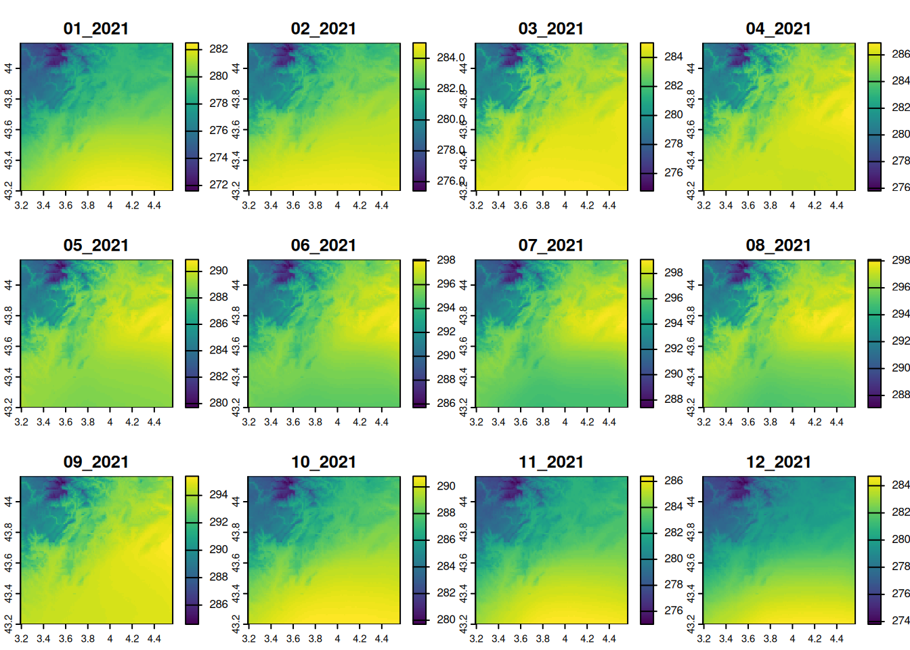
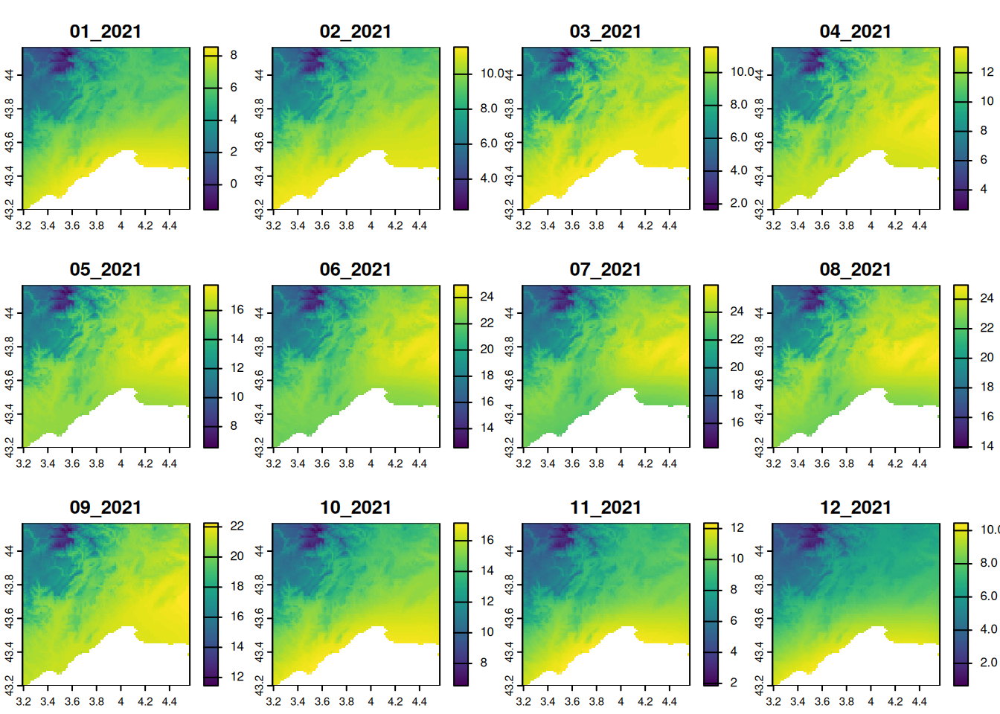
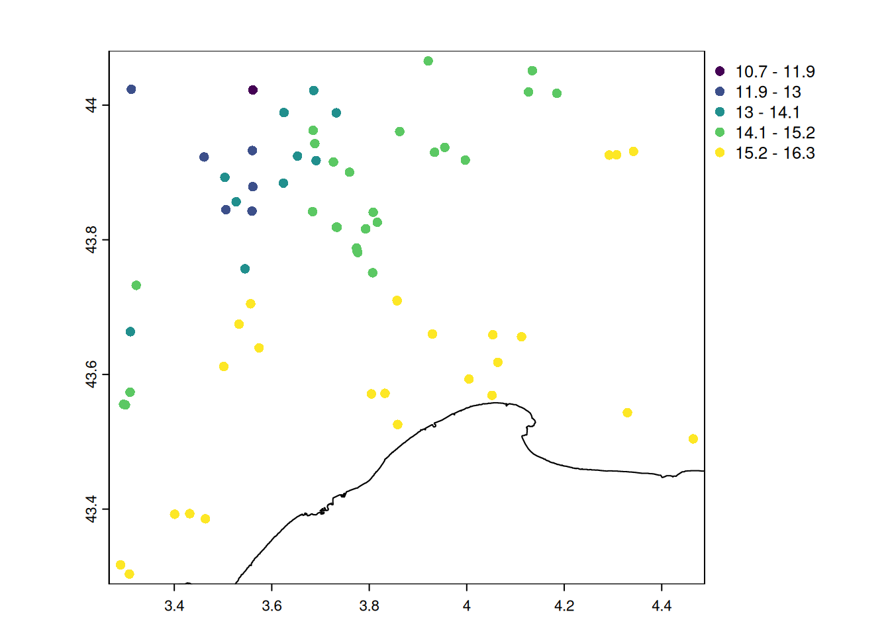
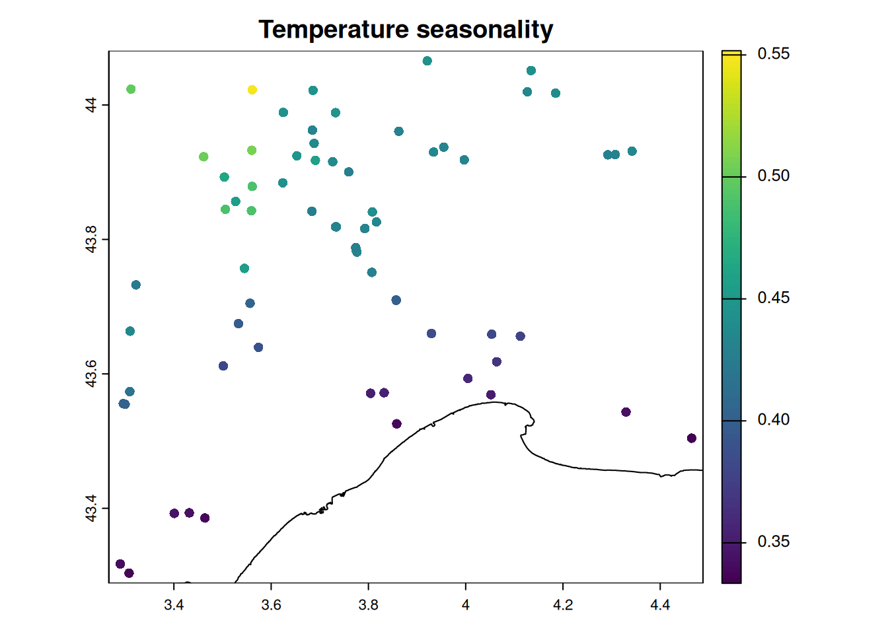
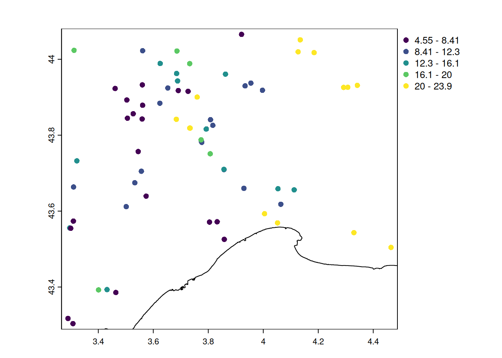
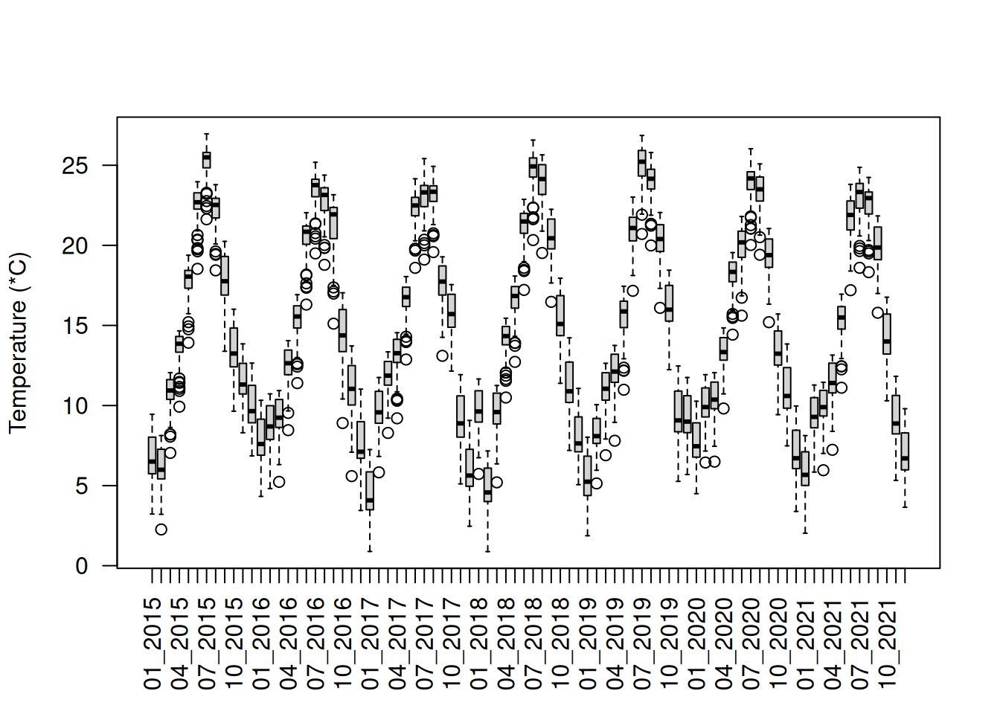
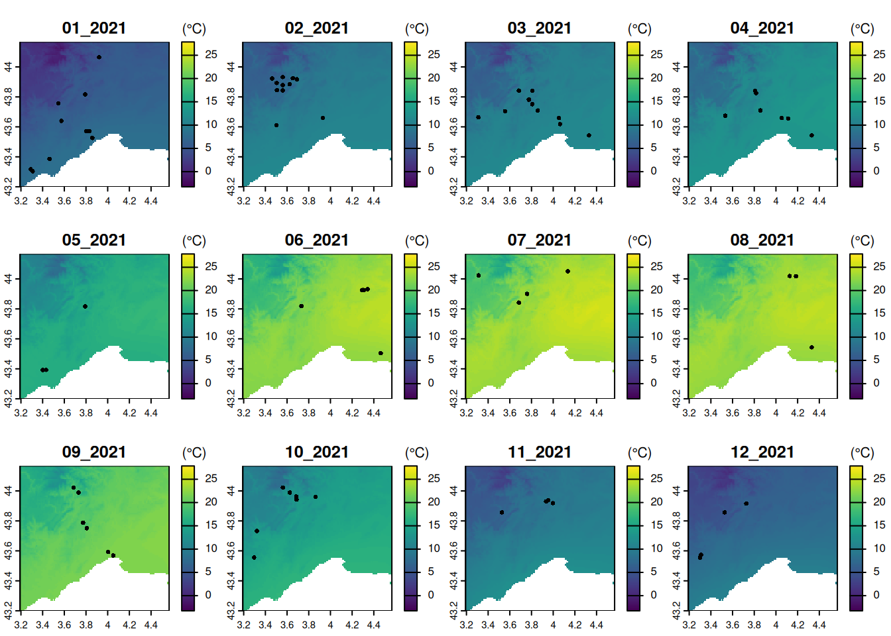
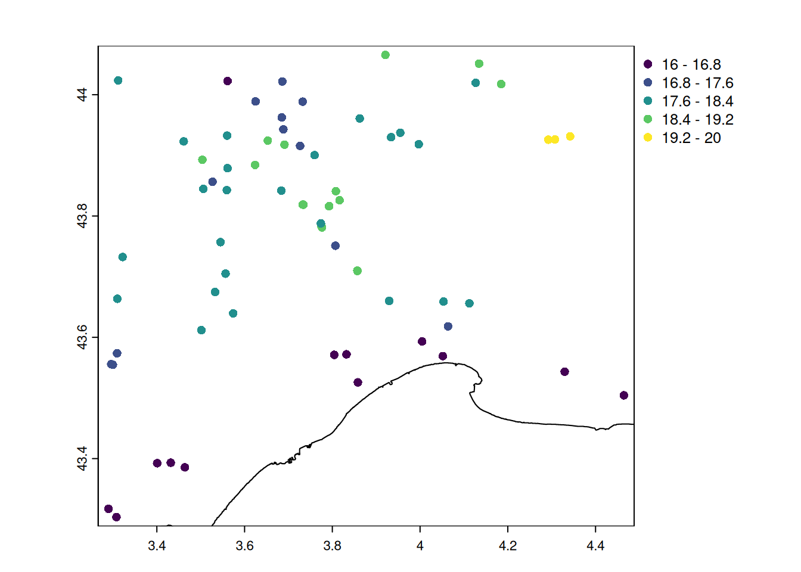

suppressPackageStartupMessages({
library(mapview)
library(here)
library(terra)
})Multi-layer rasters
ImportantSummary
This tutorial explores how to handle multi-layer rasters in with terra package:
- import a multi-layer rasters with
terra::rast()
- extract information from rasters on points or polygons with
terra::extract()
TipThe ecologist mind
How are otters influenced by climate? We need to get the climatic conditions where and when the otters were observed. To get such data, we need to discover another type of spatial data: multi-layer rasters.
Setup
Follow the setup instructions if you haven’t followed previous tutorials
If haven’t done it already, please follow the setup instructions.
Let’s start with loading the required packages.
Now load the observations of otters recorded in 2021 within a 50km buffer from Montpellier, France.
pt_otter <- vect(here("data", "gbif_otter_2021_mpl50km.gpkg"))pt_otter <- vect(
"https://github.com/FRBCesab/spatial-r/raw/main/data/gbif_otter_2021_mpl50km.gpkg"
)Load monthly climate data
We will use the monthly average temperature data from CHELSA which has a spatial resolution of 1km. To see how we created the data for our case study, have a look at this tutorial.
Import
The function to import most kind of raster file in is terra::rast()
temperature <- rast(here("data", "CHELSA_monthly_tas_2015_2021.tif"))url_github <- "https://github.com/FRBCesab/spatial-r/raw/main/data/"
temperature <- rast(paste0(url_github, "CHELSA_monthly_tas_2015_2021.tif"))
NoteYour turn
- What are the dimensions of the loaded temperature raster?
- What is the resolution of rasters? In which unit?
- What are the different layers and how can we get their names?
Click to see the answer
- There are
116rows,165columns and84layers in the raster. You can access it withdim(temperature)or just by typingtemperaturein the console.
- The spatial resolution of raster is
0.0083decimal degrees (equal to30arc seconds). The resolution is expressed in degrees because the projection system isWGS 84(EPSG4326). You can access these information withres(temperature)andcrs(temperature, describe = TRUE)or just by typingtemperaturein the console.
- The different layers correspond to monthly averaged temperature. To access the name of the layers, type
names(temperature).
Rename
To simplify the next steps, we will rename the layers with only their corresponding month and year.
# shorten names
time_chelsa <- substr(names(temperature), 12, 18)
names(temperature) <- time_chelsaVisualize
Let’s visualize the monthly temperature of 2021 with the function plot(). To set a commun color scale among layers, we use the parameter range.
# select the layers of 2021
in_2021 <- grep("2021", time_chelsa)
# plot the 2021 temperature layers
plot(temperature, in_2021, range = range(values(temperature)))
NoteYour turn
- What is the unit of the temperature values?
- Mask the sea from the temperature raster with the land boundary of France (as in the Chapter Rasters).
Click to see the answer 1
The temperature are expressed in Kelvin, as indicated in the documentation of Chelsa-monthly datasetClick to see the answer 2
# get the border of the country (level = 0)
france_border <- readRDS(here("data", "gadm41_FRA_0_pk.rds"))
# or directly from geodata
# france_border <- geodata::gadm("FRA", level = 0, path = here("data"))
# mask (=set to NA) the pixels that are not in the polygon
temperature <- mask(temperature, france_border)
plot(
temperature,
in_2021,
range = range(values(temperature))
)
Transform in degree Celsius
We can make algebra operations in rasters. For instance, we can transform Kelvin to degree celsius.
temp_C <- temperature - 273.15
# calculate the range of temperature values
range_T <- range(values(temp_C), na.rm = TRUE)
# add otters observations in each layer with `fun`
plot(
temp_C,
in_2021,
range = range_T,
plg = list(title = "(°C)"),
fun = function() points(pt_otter)
)
Extract information on points
Similar to simple raster, the function terra::extract() will get the temperature values of all months (= all layers) at the location of the observations.
pt_temp <- extract(temp_C, pt_otter, ID = FALSE)
dim(pt_temp)[1] 83 84summary(unlist(pt_temp)) Min. 1st Qu. Median Mean 3rd Qu. Max.
0.95 9.55 13.75 14.69 20.55 26.95 The extracted temperature (in pt_temp) are stored in a data.frame with rows corresponding to otters observations, and columns corresponding to months.
We can visualize the seasonal variation of the temperature with a simple boxplot()
# plot the seasonal variation of the mean temperature
boxplot(pt_temp, las = 2, ylab = "Temperature (*C)")
Average temperature
TipThe ecologist mind
Having one temperature variable per month is not informative, because these variables are highly correlated. So we need to summarize the information in term of average temperature or seasonal variation.
With these monthly temperature values, we can calculate the average of monthly temperature for the period 2015-2021.
# apply(x, 1, mean) will calculate the mean over rows
mean_temp <- apply(pt_temp, 1, mean, na.rm = TRUE)
# distribution of average values
summary(mean_temp) Min. 1st Qu. Median Mean 3rd Qu. Max.
10.74 14.04 14.74 14.69 15.76 16.31 # attach the temperature as an attribute
pt_otter$mean_temp <- mean_temp
# let's map the average temperature
plot(
pt_otter,
"mean_temp",
type = "continuous",
main = "Average 2015-2021 temperature",
plg = list(title = "(°C)")
)
plot(france_border, add = TRUE)
Seasonal variations
Another interesting indicators is the seasonality of monthly temperature, which we can measure as the coefficient of variation (= the ratio of the standard deviation to the mean).
# calculate the standard deviation
sd_temp <- apply(pt_temp, 1, sd, na.rm = TRUE)
# get the coefficient of variation
cv_temp <- sd_temp / mean_temp
# distribution of temperature seasonality
summary(cv_temp) Min. 1st Qu. Median Mean 3rd Qu. Max.
0.3334 0.3823 0.4326 0.4185 0.4445 0.5517 # let's map the temperature seasonality
# attach the value to the spatial points
pt_otter$cv_temp <- cv_temp
# create the map
plot(
pt_otter,
"cv_temp",
main = "Temperature seasonality",
type = "continuous"
)
plot(france_border, add = TRUE)
Observations made closer to the sea have warmer climate and lower seasonal variations in temperature.
Temperature at the time of observation
TipThe ecologist mind
Instead of the average climate in the time period 2015-2021, otters observations might also be affected by the weather at the time of observation (here approximated by the month of the observation).
We need to identify which temperature layer correspond to the time of the observations. For this we will use the date formatting in . If you want more details, have a look at the documentations of as.Date() and strptime() .
pt_otter$time <- as.Date(pt_otter$eventDate) |> format("%m_%Y")
table(pt_otter$time)
01_2021 02_2021 03_2021 04_2021 05_2021 06_2021 07_2021 08_2021 09_2021 10_2021
12 11 11 8 3 6 4 3 6 7
11_2021 12_2021
5 7 We now have the same format for the name of the temperature layer and the time of the observations, so we can get the temperature value at the time of observation.
# identify the matching layer corresponding to the time of observation
t_obs <- match(pt_otter$time, names(pt_temp))
# get the values
xy <- cbind(1:nrow(pt_otter), t_obs)
pt_otter$temp_obs <- pt_temp[xy]
# distribution of the monthly temperature corresponding to the observation
summary(pt_otter$temp_obs) Min. 1st Qu. Median Mean 3rd Qu. Max.
4.55 7.75 10.35 12.44 15.75 23.85 # mapping the new indicator
plot(
pt_otter,
"temp_obs",
main = "Monthly temperature",
type = "continuous",
plg = list(title = "(°C)")
)
plot(france_border, add = TRUE)
NoteYour turn
- Extract the average temperature in 2015-2021 for 1km buffers around the observations. Use buffers as explained in the Chapter Rasters.
- (advanced) Make monthly temperature maps with corresponding observations overlaid
- (advanced) Calculate the range of monthly temperature within the 12 months before the observations, and make a map.
Click to see the answer 1
# create buffers
poly_otter <- buffer(pt_otter, 1000) # buffer of 1km
# no need to project because everything is in WGS84
# extract values for each layer
mean_buffer_temp <- extract(
temp_C,
poly_otter,
fun = mean,
exact = TRUE,
ID = FALSE
)
boxplot(mean_buffer_temp, las = 2, ylab = "Temperature (*C)")
Click to see the answer 2
# option with a for loop:
par(mfrow = c(3, 4), mar = c(4, 4, 4, 1))
for (i in grep("2021", time_chelsa, value = TRUE)) {
plot(temp_C, i, range = range_T, plg = list(title = "(°C)"), main = i)
points(pt_otter[pt_otter$time == i, ])
}# option in a single line using plot()
plot(
temp_C,
in_2021,
range = range_T,
plg = list(title = "(°C)"),
fun = function(i) {
points(pt_otter[pt_otter$time == names(temp_C)[in_2021][i], ])
}
)
Click to see the answer 3
# we start from the matching time
t_obs <- match(pt_otter$time, names(pt_temp))
# then we want to get 11 months before the observation
t_past <- t_obs - 11 # ideally check if not negative
# calculate the difference of min-max value within the time period
temp_past12m <- sapply(1:nrow(pt_temp), function(i) {
diff(range(pt_temp[i, t_past[i]:t_obs[i]]))
})
# distribution of the temperature range
summary(temp_past12m) Min. 1st Qu. Median Mean 3rd Qu. Max.
16.00 17.35 18.00 17.81 18.60 20.00 # attach to the attribute table
pt_otter$temp_range_12m <- temp_past12m
# visualize the results
plot(
pt_otter,
"temp_range_12m",
main = "Past 12-months temperature range",
type = "continuous",
plg = list(title = "(°C)")
)
plot(france_border, add = TRUE)